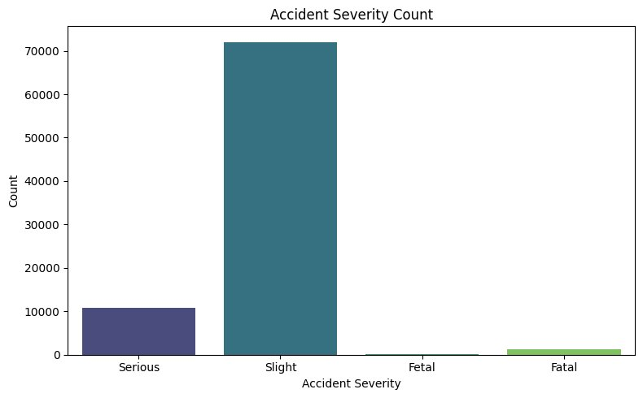
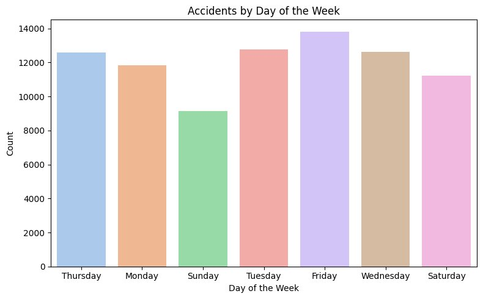
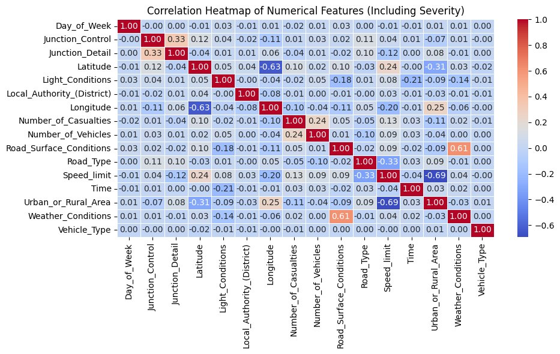
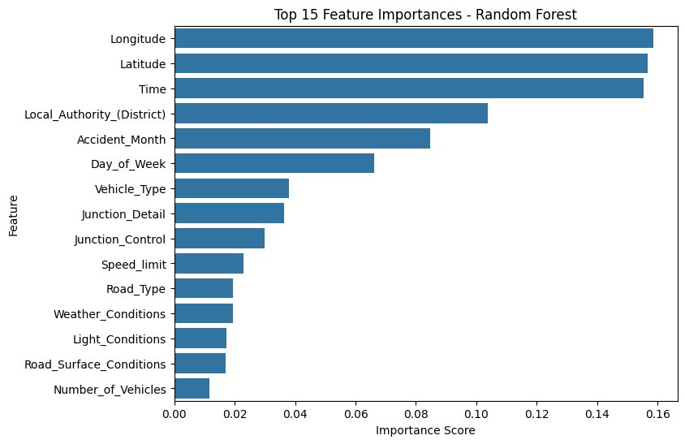

A full predictive analytics and machine learning pipeline on 307,973 UK police-reported road accidents, comparing CART, Random Forest, and Logistic Regression to classify accident severity as Slight, Serious, or Fatal.
Road accidents cost lives, money, and emergency resources. If we can understand when and where severe accidents are most likely to happen, authorities can allocate resources more effectively and prevent fatalities.
Core question: Can we predict whether a UK road accident will be Slight, Serious, or Fatal based on known conditions at the time of the incident?
Source: UK police-reported road accidents dataset, 307,973 records. Features include road and lighting conditions, weather, location (lat/long), number of vehicles and casualties, time and day, and urban vs rural area.
# Box-Cox transformation to correct right skew
from scipy.stats import boxcox
df['Number_of_Vehicles_boxcox'], fitted_lambda = boxcox(df['Number_of_Vehicles'] + 1)
print("Box-Cox lambda:", fitted_lambda)
# lambda = 0.0163 (close to 0 = log-like transformation)
# Confirms significant non-normality in the original distribution
# Label encode all categorical features
categorical_features = [col for col in df.select_dtypes(include='object').columns
if col != 'Accident_Severity']
for col in categorical_features:
df[col] = le.fit_transform(df[col].astype(str))
# Stratified 80/20 split
X = df.drop(['Accident_Severity', 'Accident Date'], axis=1)
y = df['Accident_Severity']
X_train, X_test, y_train, y_test = train_test_split(
X, y, test_size=0.2, random_state=42, stratify=y
)
EDA revealed that severity is heavily skewed toward Slight accidents, most incidents occur on weekdays, and location and time are stronger predictors than weather or road surface.




Three classifiers were trained and compared on accuracy, precision, recall, and F1-score. All models used the same 17 engineered features and 80/20 stratified split.
from sklearn.tree import DecisionTreeClassifier
from sklearn.ensemble import RandomForestClassifier
from sklearn.linear_model import LogisticRegression
# CART Decision Tree
cart = DecisionTreeClassifier(random_state=42)
cart.fit(X_train, y_train)
y_pred_cart = cart.predict(X_test)
# Random Forest
rf = RandomForestClassifier(random_state=42, n_jobs=-1)
rf.fit(X_train, y_train)
y_pred_rf = rf.predict(X_test)
# Logistic Regression
lr = LogisticRegression(max_iter=300, n_jobs=-1)
lr.fit(X_train, y_train)
y_pred_lr = lr.predict(X_test)
# Evaluation function
def evaluate(model_name, y_true, y_pred):
print(f"=== {model_name} ===")
print("Accuracy :", accuracy_score(y_true, y_pred))
print("Precision:", precision_score(y_true, y_pred, average='macro'))
print("Recall :", recall_score(y_true, y_pred, average='macro'))
print("F1 Score :", f1_score(y_true, y_pred, average='macro'))
| Model | Accuracy | Precision | Recall | F1 Score |
|---|---|---|---|---|
| CART Decision Tree | 85.47% | 0.314 | 0.252 | 0.238 |
| Random Forest - Best Model | 85.66% | 0.376 | 0.253 | 0.238 |
| Logistic Regression | 85.77% | 0.214 | 0.250 | 0.231 |
Since location (lat/long and district) is the top predictor, authorities should map high-severity accident zones and concentrate infrastructure improvements and speed controls in those specific areas.
In areas with historically high serious-accident rates, improve street lighting and enforce speed limits more strictly - both features the model identifies as having moderate predictive power.
Accident Month is the 5th most important feature. Deploy targeted road safety campaigns and increased enforcement during peak accident months identified by the model.
Deploy Random Forest as a decision-support tool in dispatch systems. When an incident is reported, the model can instantly estimate likely severity to help route the appropriate emergency response.
Future enhancements:
Download the full Jupyter notebook and presentation slides.